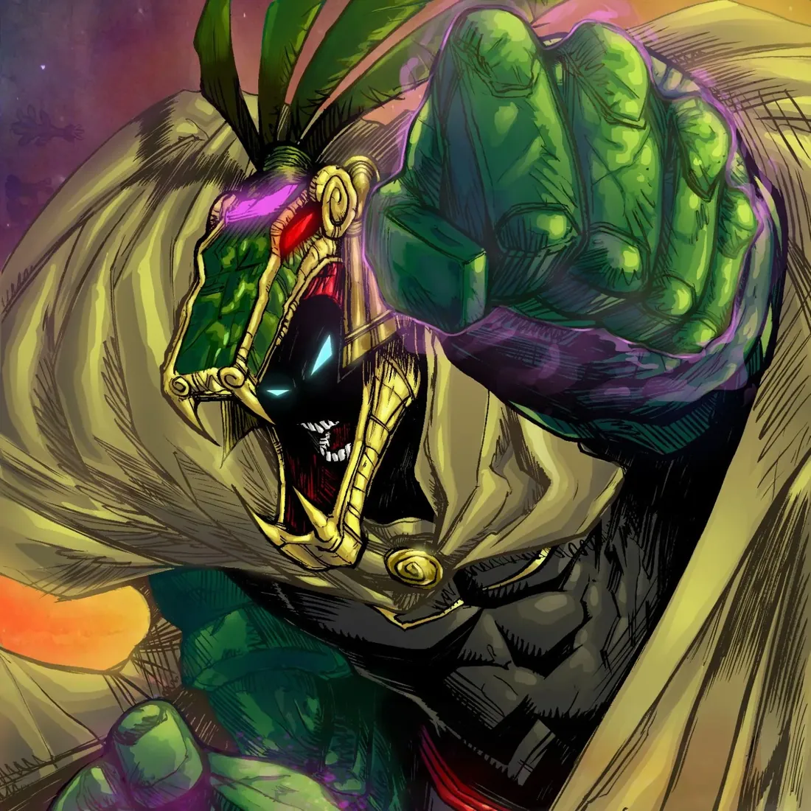
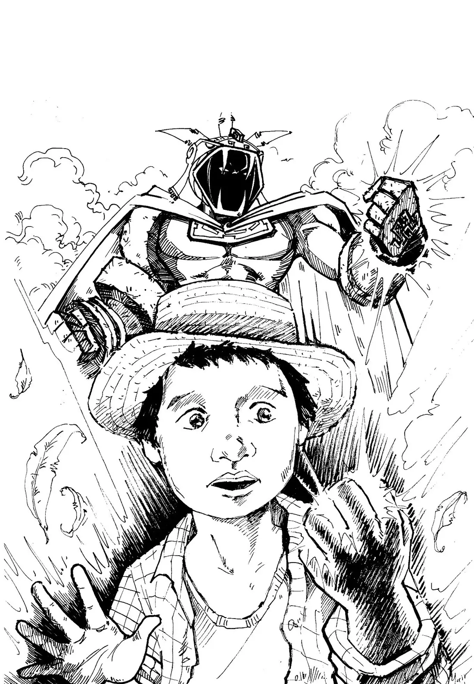
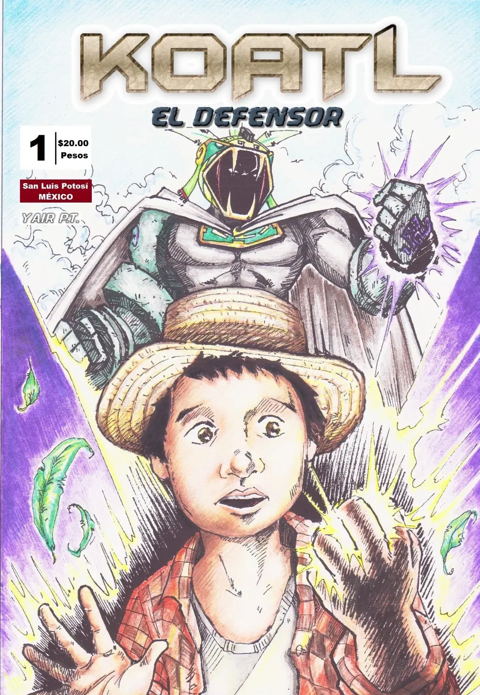

El comienzo
Llega el #1 y con él los primeros productos. Del diseño beta descartado sólo sobrevivieron las partes de roca. En noviembre, Koatl llega al Festo Cómic, mi primer evento en la Ciudad de México.

El primer superhéroe de raíces huastecas, elegido por el dios Quetzalcóatl para portar un poder ancestral y proteger a los demás. Un campeón inesperado que equilibra su destino como guardián de un legado milenario con los retos de la vida moderna.
Las aventuras de Koatl nacieron como un cómic independiente, publicado y financiado por su autor en San Luis Potosí.
La premisa era ofrecer un superhéroe nacional con aventuras publicadas de forma regular, que se nutriera de la mitología prehispánica, la ficción histórica y la situación del México contemporáneo.
Debutó en junio de 2014 con periodicidad mensual y un tiraje modesto. Poco a poco salió de su ciudad natal y llegó a León, Guanajuato, y a algunos puntos de la Ciudad de México. Los primeros ejemplares tenían 24 páginas, portada a color e interiores en blanco y negro.
Hoy la trama completa de Koatl supera las 500 páginas.

Trazo a tinta de la primera portada.

El número 1 original, 2014.
Desliza para recorrer la línea de tiempo.
Llega el #1 y con él los primeros productos. Del diseño beta descartado sólo sobrevivieron las partes de roca. En noviembre, Koatl llega al Festo Cómic, mi primer evento en la Ciudad de México.
Para que los nuevos lectores pudieran ponerse al día, armé el tomo 1 de forma artesanal: encuadernado a mano, porque imprimirlo era incosteable. Ese año Gerardo Sandoval, artista mexicano de Marvel, dibujó la portada del #10.
Koatl aparece como personaje invitado en el videojuego Tzompantli: por primera vez tiene voz y animaciones. Nace Choque de Héroes, el juego de cartas que lo llevó a torneos en varios estados. Primera invitación al Encuentro de Creadores de Cómic.
El tomo 2 reúne los números 6 a 10 y la miniserie de Ixchell “Desde las cenizas”. Fabrico 50 figuras de resina pintadas a mano y Koatl hace su primer crossover con Xiuhcóatl, de Estudio Paltik, en la revista Códice Infinito. Debut en la FIL Guadalajara.
Lanzo un art-toy coleccionable con empaque propio, pintado y empacado a mano: 140 piezas, las primeras 50 numeradas. Koatl pelea en Combate Monero, de Oribe Ware Games, y por fin consigo impresor profesional para los tomos.
Koatl se involucra en el incendio de la sierra de San Miguelito con un mini cómic, y TV Azteca lo incluye en su reportaje. Regreso a la Conque y a la FIL, y lanzo el segundo art-toy, dedicado a Micté.
Los eventos se cancelan y pauso los números nuevos, pero Koatl no se detiene: cambia de formato. Empieza el desarrollo del videojuego oficial con Oribe Ware Games y, por el sexto aniversario, rehago el #1 completo a color.
Mi página de Facebook crece de repente. Para el séptimo aniversario lanzo el tomo 3, mitad cómic y mitad artbook, con una cena de aniversario de asistencia limitada. La serie parodia “What If” explora otros universos sin tocar la cronología.
Tras Los Túneles Perdidos, el primer videojuego completado de un superhéroe mexicano, llegaron la edición Decomixado, el Tomo Compendio, Convergencia Latina y los 10 años de Koatl. En 2026: Crisis en Xantolo, la demo de Koatl The Defender ULTIMATE y un nuevo universo de cómic latinoamericano.
Procesos de impresión: así se fabrican los tomos de Koatl (Periferia Press)
Entrevista en el Encuentro de Creadores de Cómic 2016
Koatl rompe la cuarta pared: saludo del séptimo aniversario
Orígenes de superhéroes mexicanos: Koatl el Defensor (Multimexo)
Todos los ejemplares individuales en orden de publicación, de 2014 a hoy, más los tomos recopilatorios y especiales.

Koatl enfrenta una crisis en Chapulhuacanito durante el Xantolo, la celebración de Día de Muertos de la Huasteca potosina.
Unas 60 páginas en escala de grises, con técnica mixta entre ilustración tradicional y digital, que mezclan mitología, identidad y costumbres locales en lugares reconocibles de la Huasteca. Pensada también para quienes nunca han leído cómic.
Se presentó en marzo de 2026 en la Feria Nacional del Libro de la UASLP. Primero llega en edición digital y después en físico.
Todo el mundo conoce los grandes universos del cómic estadounidense. ¿Y el cómic latinoamericano?
Editoriales y artistas de cómic independiente de México, Perú, Argentina, Ecuador y Colombia unimos esfuerzos para crear un mismo universo narrativo, con héroes nacidos de nuestra historia y nuestra mitología.
Buscamos una identidad propia para el cómic latinoamericano: inspirarnos en nuestros mitos, leyendas y raíces culturales para contar historias que reflejen la riqueza de América Latina y los lazos que unen a sus pueblos.
La primera historia reúne a cuatro personajes: La Chola Power (Perú), Koatl el Defensor (México), Saic (Colombia) y el Caballero Rojo (Argentina). Es una iniciativa de MEDcomics Perú y Ave Negra Cómics junto con Codex Studio.
Éste es sólo el comienzo. Invitamos a artistas y editoriales de todo el continente a sumarse y escribir, entre todos, las próximas páginas del nuevo universo del cómic latinoamericano.
Un evento parodia para explorar otras posibilidades del personaje sin alterar la cronología del cómic.
Decomixado Publishing House, fundada en 2023, es una editorial mexicana de cómic alternativo enfocada en el mercado coleccionista nacional e internacional.
Sus ediciones se distinguen por acabados de lujo, portadas foil, variantes limitadas y folio único en cada ejemplar. La editorial se interesó en publicar una edición coleccionista de Koatl el Defensor y, tras llegar a un acuerdo, lanzamos una campaña de promoción en paralelo a la producción.
Koatl el Defensor #1 en edición premium tiene 48 páginas, tres pin-ups y una historia extra de 4 páginas, sin publicidad. Incluye la primera aparición de Julián, de Koatl y de Quetzalcóatl.

La portada de la segunda impresión es de Víctor Nava Corona, artista mexicano de Marvel, en versión foil regular y foil virgin (sin logotipos), aún más limitada.
Las colecciones que comparten quienes siguen a Koatl, y los videos que han hecho sobre él.
Koatl, el superhéroe mexicano con su propio videojuego y pizza temática (Jimoltrufio)
Koatl el Defensor vs. ficción (El Canal de Sigma)
Koatl el Defensor: Convergencia Latina (Zabrak93)
¿Sabes quién es Koatl el Defensor? (Ex’Studios)
Koatl (La Cueva del Cómic Latino)
Unboxing de los números de Koatl el Defensor (Iper Lara Juárez)
Unboxing de Koatl y pines de PokeMX (Iper Lara Juárez)
¿Qué tan poderoso es Koatl el Defensor? (El Canal de Sigma)
¿Qué tan poderoso es Koatl el Defensor? (Jiovaz S.S.P)
Colección del #0 al #4, los primeros ejemplares (Roberto Sr Kabrakan)
¿Tienes tu colección de Koatl? Mándame una foto por mensaje y puede aparecer aquí.
Cotizo ilustración, diseño de personajes y mascotas, cómic por encargo, conferencias y talleres. Escríbeme y te respondo con una propuesta.